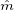
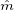

= E(t,T)~p(t,T)[v].
= E(t,T)~p(t,T)[v].
We introduce an acquisition risk swap (ARS), a type of subordinated risk swap that could be used to hedge the risk of being unable to acquire a capability during an uncertain future time interval. Examples of such scenarios include a nation being unable to procure specific military capabilities in the event of a future conflict or a firm being unable to procure a product component in the event of a future pivot to a new market. We describe the contractual structure of an ARS, pricing formulae, and possible market structures that could facilitate the efficient exchange of ARS. Simulations of ARS price distributions under a variety of example event probability and capability value models indicate typical positive skew, implying the need for a writer of ARS to hedge their position. We outline a market structure that decouples pricing and sale of ARS from creation of the capability to be acquired. Participation in this market enables the writer of ARS to hedge its risk and is a positive-sum outcome for both the writer of the ARS and the creator of the capability.
Swaps are financial instrument that enable two or more parties to exchange value flows at pre-defined times or upon the occurrence of precisely defined events. Subordinated risk swaps are a generic class of swaps that trade a firm’s idiosyncratic risk (e.g., managerial or event risk) for a series of cash flows. We introduce an acquisition risk swap, a type of subordinated risk swap designed to enable the acquiring agent (“acquirer”) to hedge the risk of being unable to acquire a capability at an uncertain time in the future. In the case of defense acquisition, which is the motivating driver of this work, an example of such a risk is that associated with the widely reported shortage of 155mm shells used in modern artillery pieces1 .
We argue that adoption of ARS by users of a capability might be desirable for at least three interrelated reasons – risk reduction, efficiency, and transparency:
Risk reduction – the purchaser of the ARS will be able to plan for future contingencies with increased certainty and will likely pay a lower cost for doing so if the event against which the purchaser is hedging does come to pass.
Efficiency – ARS enable each party involved – the purchaser of the ARS, seller of the ARS, and a downstream creator of the capability that may be desired in the future – to specialize, focusing on their comparative advantages (of using the capability, determining the probability that the capability is necessary, and creating the capability respectively) rather than the party that needs to use the capability performing all three tasks likely suboptimally.
Transparency – as with any type of market, the publication (to a more or less limited audience) of the prices resulting from exchange in that market are a signal of the extent to which the asset traded in that market is demanded and can be supplied. In the case of an ARS, this translates to transparency in the probability of (a) the time window over which a specified event might occur and (b) the value that the acquirer places on the acquired capability. Analysis of the ways in which the capability can be used in a particular context, in conjunction with the inferred value the acquirer places on the capability, reveals aspects of the acquirer’s strategy in that context. Depending on the context, this may or may not be a desirable feature of an ARS market. For example, prices in an ARS market could be used to signal to a nation’s adversaries, or to a firm’s competitors, an intent to take specific actions at a future time.
In Section 2 we outline the basic contract structure of an ARS and derive explicit formulae for pricing it under multiple assumptions, some of which we then relax. Section 3 describes possible market structures that could facilitate pricing and exchange of ARS, while Section 4 describes empirical distributions of ARS prices under multiple different modeling assumptions. We close by describing possible generalizations of our work in Section 5.
We outline the asset definition and pricing in discrete time; an extension to continuous time should be straightforward. An agent that needs a capability during a future time interval {t,...,T} holds the ARS, paying a coupon of mτ,τ ∈{0,...,t - 1}, where t ≤∞ (the ARS may never be exercised, in which case the ARS is a perpetual obligation). When the capability is needed – the a priori unknown future time t – the holder of the ARS ceases to pay the coupon and is delivered a capability that has value vτ,τ ∈{t,...,T}.
We solve for the coupon rate mτ by finding such a value that makes the cash flows equivalent at time zero.
Defining the valuation V (t1,t2) = ∑
τ=t1t2-1βτ[mτδ(τ < t) + vτδ(τ ≥ t)], where β = and r is the risk
free rate, the coupon payments are those values mτ that satisfy V (0,t) = V (t,T). With the simplifying
assumption that mτ = m, τ ∈{0,...,t - 1}, the coupon payment is m = ∑
τ=tT-1βτvτ, or under the
additional assumption that the value of the acquired capability is equal at all times τ ∈{t,...,T - 1},
m = v. Here, m is a random variable, as it depends on the random time interval {t,...,T - 1} over
which the capability is required. Modeling the time interval with the joint distribution (t,T) ~ p(t,T), we
take the coupon payment as the expected value of m, = E(t,T)~p(t,T)[v].
More generally, the interest rate rτ and the valuation of the capability vτ may vary in time. Interest rates may be correlated with the existence or nature of the conditioning event; for example, conflict could lead to shortages of basic necessities such as food and fuel, raising inflation which could cause a central bank to raise interest rates [BK84]. The value of one capability immediately after the inception of a conflict could be very high but decrease as time progresses, while another capability could increase in importance as a conflict progresses. With these considerations in mind, a more general valuation of the ARS is m = E(r,v,t,T)~p(r,v,t,T)[], where analogously βτ = .
We undertake a brief discussion of naive and more nuanced market structures for ARS, and discuss methods by which price discovery for ARS is likely to occur. We leave in-depth analysis of possible market structures for future work.
The mechanics of an ARS contract are specified in Section 2; a graphical depiction of these simple mechanics is displayed in Fig. 1,
in which panel (a) refers to before the ARS is exercised by the holder and panel (b) describes the structure after it is exercised. We display a notional, more-developed market structure in Fig. 2.
In this example, the writer sells the ARS to the acquirer and hedges the risk it takes on in doing so by contracting with a creator of the capability (e.g., in the 155mm shell example, a manufacturer capable of rapidly retooling to create shell casings), paying that creator a fixed-fee retainer R at the initial time period. If the triggering event occurs, the writer pays a further stream of cashflows rτ (which are possibly zero) to the creator; the creator creates the capability and delivers it to the acquirer.
A more complex market structure, such as the one outlined in the previous paragraph and displayed in Fig. 2, has at least two benefits over the naive market structure displayed in Fig. 1:
Decoupling of financial valuation from physical delivery. In general, there is no reason to believe that a firm with the expertise valuing an ARS – i.e., a firm that believes it can accurately and precisely estimate the probability distribution of the window over which a capability would be needed – would also have the expertise required to rapidly create that capability. For example, a geopolitical risk firm that believes it can assess the likelihood and duration of a conflict between two nations is probably not the same firm that can rapidly manufacture a large quantity of shell casings.
Incentive to participate in the market due to speculation and innovation. The writer of an ARS might believe that the conditioning event will occur in the very distant future, or has a very low probability of occurrence at all, and therefore believe that the negotiated stream of income mτ represents a low-risk profit opportunity. The creator of the capability, on the other hand, may have no opinion about the likelihood of the event at all, but assesses it can very rapidly create the required capability with almost no advance warning and at a cost exactly equal to rτ in perpetuity; in this case, the retaining fee R is essentially a risk-free profit for the creator.
How might the price of an ARS be discovered? As with other swaps, this would likely depend on the liquidity of the underlying capability that the acquirer is hedging and the relative market power of the acquirer(s) compared with the writer(s). In the monopsonistic case, and when the capability is relatively liquid or even standardized, it would seem likely that the acquirer would run an English reverse auction (or similar commonly practiced single reverse auction). When the capability is less liquid the contracted price could be negotiated over-the-counter between the writer(s) and acquirer. We explore other mechanisms for price discovery in Section 5.
We outline some empirical statistical properties of the ARS under simple statistical models and an example market structure.2
We briefly compare empirical distributions of ARS price under different generative models of event time interval {t,...,T - 1}, value v, and interest rate r. We emphasize that these distributions are rough indicators of behavior only as the price of ARS will depend crucially on estimation of value and event time interval probability that will very likely be highly context-dependent. Specializations to specific operational contexts are not in scope for this work.
Each pricing example uses the naive event probability distribution p(t,T) = p(t)p(δt) = Geometric(t|ρt) Geometric(δt|ρδt),
where T = t + δt. Each example begins with a notional risk-free rate of 4%, capability value of v = 100
(abstract numeraire), and ρt = ρδt =  . Empirical density functions of price are displayed in Figure 3.
. Empirical density functions of price are displayed in Figure 3.
We describe scenarios in terms of changes to the default parameters listed above.
(Geo) – no changes to the specifications listed above.
(NormGeo) – ~ Normal(v,σv2). By Jensen’s inequality, the linearity of the identity function, and the conditional independence of v and (t,T), the price distribution in this scenario is theoretically identical to that of Geo.
(IncVal) – vτ = vτ-1(1 + ϵ), where ϵ ~ Exponential(ϵ|1), modeling an on-average-precipitous increase in the value of the capability for the duration of the event.
(IncValIR) – simultaneously (a) the value of the capability deterministically increases from v to asymptotically approach a new steady state according to vτ = v∕2 + v∕[1 + exp(-(τ - t))] and (b) the interest rate moves from stochastic fluctuation about the steady state r- = 4% to the higher steady state r+ = 6.5%. Stochastic fluctuation is modeled via a single factor short rate model, rτ = rτ-1 + θ(r*- rτ-1) + ξ, where ξ ~ Normal(0,σξ2) and r* is the equilibrium rate and θ > 0.
(DecValIR) – simultaneously (a) the value of the capability deterministically decreases according to vτ = v∕exp(-(τ - t)) and (b) the interest rate fluctuates according to the same model presented in IncValIR.
In these examples, ARS price distributions generally have excess mass in their right tails, meaning that there is substantial tail risk that the actual value of the cash flows to the right of the event start date have higher value than what would be suggested by the expected value pricing formulae presented earlier. We will discuss hedging strategies in Section 5.
We construct a simulation of a simple form of the market structure presented in Fig. 2. There is a single
acquirer who has a mean reservation price ~ Normal(m,σ2), where  is computed under the distribution
p(t,T) = Geometric(t|ρt*) Geometric(δt|ρδt*), where T = t + δt and the estimates ρt* and ρδt* are publicly
known. The acquirer’s observed price of the ARS is given by m ~ Normal(,σ2). There are n = 1,...,N
writers of ARS who compete to sell a single ARS to the acquirer via an English reverse auction.
They have heterogeneous beliefs about the start and stop probability of the event, modeling it as
ρt(n) ~ Normal(ρt*,σρt*2) and ρδt(n) ~ Normal(ρδt*,σρδt*2) conditioned to lie in (0,1). There are ℓ = 1,...L
manufacturers who can create the capability desired by the acquirer. Each manufacturer has a private reserve
value Rℓ ~ Normal(m,σR) they require to accept a contract for manufacture at an unknown future date, and
each has a marginal production cost of cℓ ~ Normal(m∕2,σc). Before time τ = 0, the acquirer
conducts an English reverse auction to purchase the ARS from a writer. Then, the successful writer
conducts an English reverse auction on reserve price with the manufacturers. If this market clears,
meaning that the the writer who wins the auction has a price for the ARS is less than or equal to
the acquirer’s maximum willingness to pay and, similarly, that the manufacturer who wins the
auction has a reserve price for manufacturing that is less than or equal to the writer’s maximum
willingness to pay, the model advances in discrete time, with contract mechanics as specified in Section
2.3
is computed under the distribution
p(t,T) = Geometric(t|ρt*) Geometric(δt|ρδt*), where T = t + δt and the estimates ρt* and ρδt* are publicly
known. The acquirer’s observed price of the ARS is given by m ~ Normal(,σ2). There are n = 1,...,N
writers of ARS who compete to sell a single ARS to the acquirer via an English reverse auction.
They have heterogeneous beliefs about the start and stop probability of the event, modeling it as
ρt(n) ~ Normal(ρt*,σρt*2) and ρδt(n) ~ Normal(ρδt*,σρδt*2) conditioned to lie in (0,1). There are ℓ = 1,...L
manufacturers who can create the capability desired by the acquirer. Each manufacturer has a private reserve
value Rℓ ~ Normal(m,σR) they require to accept a contract for manufacture at an unknown future date, and
each has a marginal production cost of cℓ ~ Normal(m∕2,σc). Before time τ = 0, the acquirer
conducts an English reverse auction to purchase the ARS from a writer. Then, the successful writer
conducts an English reverse auction on reserve price with the manufacturers. If this market clears,
meaning that the the writer who wins the auction has a price for the ARS is less than or equal to
the acquirer’s maximum willingness to pay and, similarly, that the manufacturer who wins the
auction has a reserve price for manufacturing that is less than or equal to the writer’s maximum
willingness to pay, the model advances in discrete time, with contract mechanics as specified in Section
2.3
We display wealth distributions of successfully matched writers and manufacturers in Figure 4 and market clearing probability as a function of number of writers and manufacturers in Figure 5. Monte Carlo simulations of this market structure suggest that the market clears with high probability even with relatively low participation. For example, even with only two writers and two manufacturers participating in the marketplace, the market clears more than half of the time. (Under this model, a market with only one potential writer and 10 manufacturers clears almost half of the time – 44% – while an ARS market with a healthy five writers and 20 manufacturers clears a full 92% of the time!)
We constructed a pricing and market structure framework for acquisition risk swaps (ARS), a type of subordinated risk swap that eliminate the risk that an agent faces from needing to acquire a costly capability during an unknown future time interval. However, we made multiple simplifying assumptions that, in our judgement, would be eliminated in a commercial implementation of an ARS marketplace. We outline several unaddressed shortcomings of the present work each of which could be ground for further research.
Event probability distribution – probably the most glaring assumption we made for each of our simulations was that of events starting and stopping according to independent Bernoulli trials. The pricing formulae described earlier do not depend on such an assumption. In reality, the probability of events for which an ARS would be appropriate to hedge, such as conflict or large-scale business transformation, would have rich structure conditioned on complex representations of world state (e.g., geopolitical factors or the competitive structure of a firm’s target marketplace). Event times might also exhibit nontrivial correlation structure (e.g., if a conflict starts sooner than expected it could also end sooner than expected). Such dependence could be modeled using an appropriate copula structure.
Valuation of the capability – we have assumed that the acquirer can place a monetary value on the capability it seeks to acquire and that the writer can assess what that monetary value is. In practice each of these statements may not be true. A lower bound to the value of an additional unit of a capability could be the sum of the marginal costs of each of its components (including labor and properly amortized operational expenditures) but this bound may be very weak. Estimating the acquirer’s value function would probably be a nontrivial task for both the writer and the acquirer, but could be facilitated by advances in reinforcement learning [SHGS15]. The acquirer may face the risk that it systematically understates its true valuation of the capability (e.g., by valuing it at only the sum of its marginal costs of production plus a constant value that does not incorporate the discounted benefits of future use) and consequently faces lower market supply than expected.4
Interest rate dynamics – interest rates may co-vary substantially with the probability of the conditioning event. For example, interest rates and the capability to be acquired may both be affected by geopolitical dynamics.
Market structure – we have outlined one market structure, in addition to the naive one defined by the mechanics of the ARS contract, that could create additional market efficiencies in terms of hedging risk and decoupling firms’ comparative advantages. However, there are likely other market structures, depending on operational context, that could incentivize participation by different firm types (e.g., different production capacities, risk preferences, or investing time horizons). In some applications, markets could need to place constraints on writers and creators (e.g., based on capitalization or security requirements).
Price discovery – the nature of the acquired capability would likely dictate the method by which its price is discovered. Non-exquisite, low-marginal cost capabilities (e.g., commodity drone parts) could be created by many parties, leading to very liquid markets; other capabilities (e.g., bespoke defense manufacturing) might exhibit complexity such that the market for capability creators, at time of the ARS’s inception, is much less liquid. The price signal created by the ARS could facilitate capital investment in that market if the timescale on which the ARS writers’ market expects the capability to be needed, Et~p(t)[t], is compatible with the requried investing timeline (e.g., timeline required to build a manfacturing facility).
The views stated in this paper are those of the author and do not necessarily represent the position of the U.S. Government or the Department of Defense. Distribution Statement A: approved for public release, distribution is unlimited.
[BK84] Daniel K Benjamin and Levis A Kochin. War, Prices, and Interest Rates: A Martial Solution to Gibson’s Paradox. 1984.
[SHGS15] Tom Schaul, Daniel Horgan, Karol Gregor, and David Silver. Universal value function approximators. In International conference on machine learning, pages 1312–1320. PMLR, 2015.